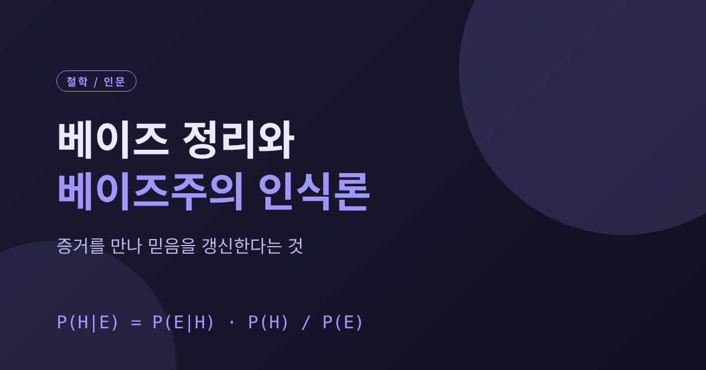
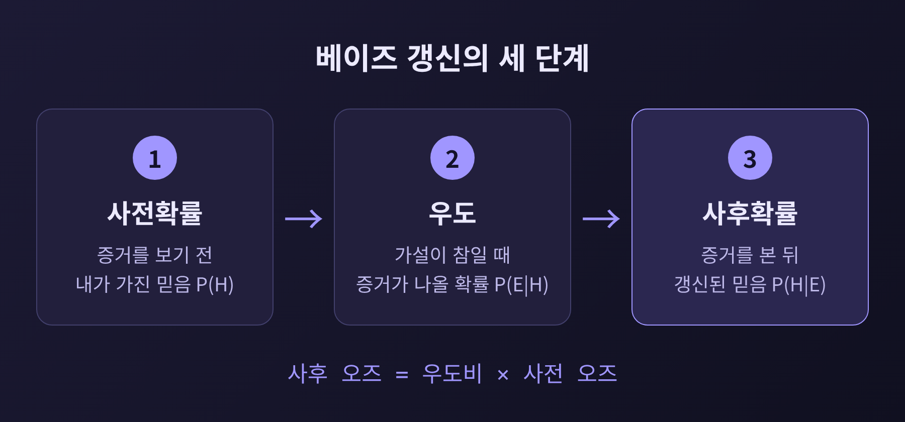
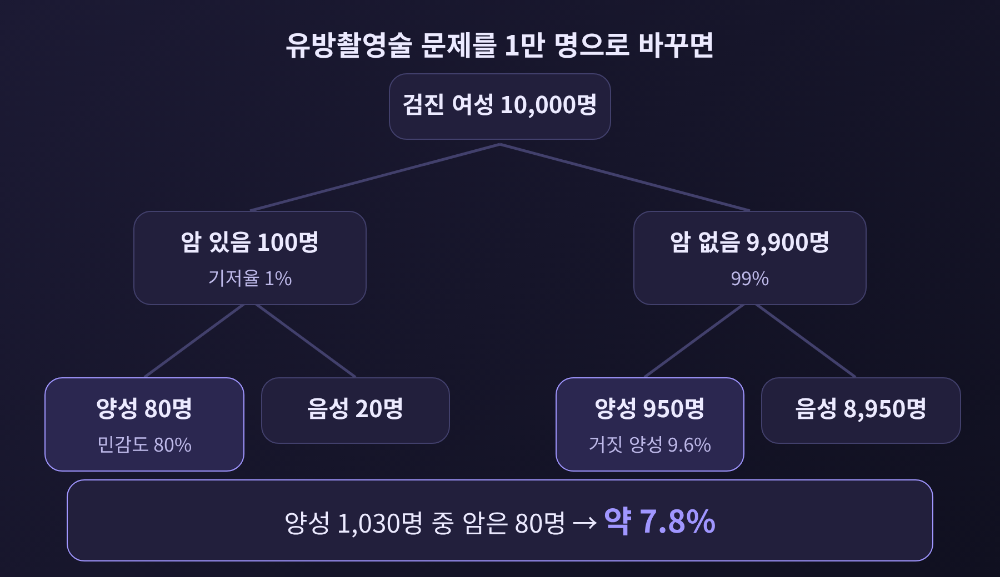
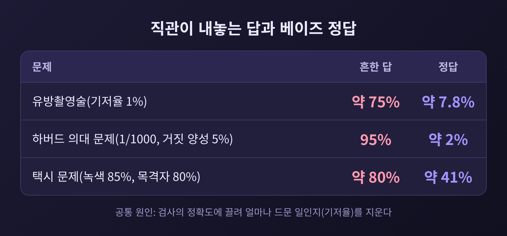
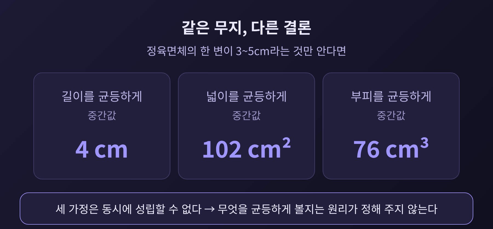
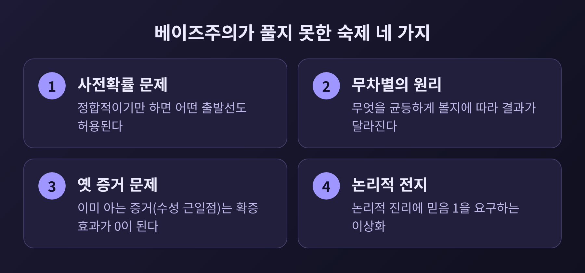

오늘은 베이즈 정리와 베이즈주의 인식론을 정리해 보려 합니다.
증거를 만나면 믿음의 정도를 확률 규칙에 따라 고쳐야 한다는 것이 베이즈주의의 핵심 주장입니다.
다만 이 규칙은 출발점인 사전확률을 정해 주지 못하고, 사람의 직관은 기저율을 자주 놓칩니다. 두 가지 한계를 함께 살펴보겠습니다.
베이즈 정리는 가설 H가 증거 E를 만난 뒤의 확률을 계산하는 규칙입니다.
증거를 보기 전의 확률(사전확률)에, 가설이 참일 때 그 증거가 나올 확률(우도)을 곱하고, 증거 자체가 나올 확률로 나눕니다.
분모는 가설이 참일 때와 거짓일 때를 나누어 펼칠 수 있어서, 증거의 전체 확률을 따로 몰라도 계산이 됩니다.
오즈 형태로 쓰면 더 직관적입니다. 사후 오즈는 우도비에 사전 오즈를 곱한 값입니다. 증거가 가설을 얼마나 밀어 올리는지는 우도비가 정하고, 출발선은 사전 오즈가 정하는 셈입니다.

역사도 짧게 짚어 두겠습니다.
토머스 베이즈는 장로교 목사였고 1761년에 세상을 떠났습니다. 역확률에 관한 논문은 생전에 발표되지 않았습니다.
친구 리처드 프라이스가 원고를 약 2년 손질하고 서문을 써서 1763년 12월 왕립학회에서 읽었고, 논문은 이듬해 학술지에 실렸다고 기록하는 자료도 있습니다. 발표 연도를 1763년으로 적는 문헌과 1764년으로 적는 문헌이 갈립니다.
피에르시몽 라플라스는 베이즈의 연구를 모른 채 1774년에 같은 결과를 독립적으로 얻었고, 1812년 『확률의 해석적 이론』에 정리했습니다. 오늘날의 베이즈적 확률 해석을 발전시킨 사람은 라플라스로 평가됩니다. 우리가 "베이즈주의"라고 부르는 용어가 이런 뜻으로 쓰이기 시작한 때는 1950년경입니다.
스탠퍼드 철학 백과사전의 설명에 따르면, 베이즈주의 인식론은 믿음을 '있다/없다'가 아니라 정도(credence)로 다룹니다. 증거가 들어올 때 그 정도가 어떻게 바뀌어야 하는지를 규범으로 묻습니다.
이 분야가 베이즈적인 이유는 정리 자체보다 두 가지 규범에 있습니다.
첫째는 확률주의입니다. 어느 한 시점의 믿음 정도들은 확률의 공리를 지켜야 합니다. 음수가 없고, 가능성 전체의 합이 1이며, 서로 겹치지 않는 명제는 더해집니다.
둘째는 조건화입니다. 증거 E를 얻으면 E와 양립할 수 없는 가능성의 믿음은 0으로 내립니다. 남은 가능성은 같은 비율로 키워서 합을 다시 1로 맞춥니다. 새 믿음은 옛 믿음에서 'X이면서 E인 경우'를 'E인 경우'로 나눈 값입니다.
왜 이 규범을 따라야 할까요. 대표적인 답이 더치북 논증입니다.
어떤 사람이 A에 0.75, A가 아닌 경우에 0.30의 믿음을 두었다고 해 보겠습니다. 합이 1을 넘는 이 사람은 두 내기를 모두 받아들이게 되고, 결과와 상관없이 5달러를 잃습니다. 램지와 데 피네티가 확률주의를, 이후 루이스와 텔러가 조건화를 이런 방식으로 뒷받침했습니다.
다른 길도 있습니다. 믿음을 참(1)이나 거짓(0)에 대한 추정값으로 보고, 확률 공리를 어기는 믿음은 더 정확한 대안에 항상 밀린다고 보이는 정확성 논증입니다.
물론 반론이 있습니다. 내기를 불편해하는 사람은 확신이 커도 내기를 거절할 수 있습니다. 또 돈을 잃는다는 실용적 이유로 인식적 규범을 정당화하는 것이 맞느냐는 물음도 남습니다.
베이즈 갱신이 실제로 어떻게 어긋나는지는 의료 검사에서 가장 선명하게 드러납니다.
유방촬영술 문제를 보겠습니다. 검진을 받는 여성의 1%가 유방암이고, 암이 있으면 80%가 양성, 암이 없어도 9.6%가 양성이 나옵니다. 양성이 나온 여성이 실제로 암일 확률은 얼마일까요.
1만 명으로 환산하면 쉽습니다. 암 환자 100명 중 80명이 양성입니다. 암이 없는 9,900명 중 950명도 양성입니다. 양성 1,030명 중 암은 80명이므로 확률은 약 7.8%입니다.

1982년 데이비드 에디는 이 문제를 의사들에게 냈습니다. 100명 가운데 약 95명이 양성일 때 악성일 확률을 약 75%로 어림했습니다.
검사의 정확도가 높다는 사실에 끌려 환자 집단에서 암이 얼마나 드문지를 지워 버린 것입니다. 이것이 기저율 오류입니다. 거짓 양성이 참 양성보다 많아질 수 있다는 점은 '거짓 양성 역설'로도 불립니다.
비슷한 결과는 반복해서 나왔습니다.

같은 검사라도 기저율이 달라지면 결과가 크게 달라집니다. 1,000명에게 거짓 양성률 5%의 검사를 한다면, 감염률이 40%인 집단의 양성은 약 93%가 진짜입니다. 감염률이 2%인 집단에서는 약 29%에 그칩니다.
법정에서도 이 문제는 비껴가지 않았습니다. 영국의 새라 클라크 사건에서는 영아 급사가 두 번 일어날 확률을 7,300만분의 1이라고 증언한 것이 유죄 판결(1999년)의 근거가 되었습니다. 왕립통계학회는 2001년 이 추론의 오류를 지적했고, 판결은 2003년 파기되었습니다.
다행히 해법은 있습니다. 확률 대신 '자연빈도'로 말하는 것입니다.
1995년 기거렌처와 호프라게의 연구에서 15개 베이즈 과제의 정답률은 약 10~20%에서 약 50%로 올랐다고 인용됩니다. 대학생 259명을 대상으로 한 2015년 연구에서는 자연빈도 문제의 정답률이 42%, 확률 문제는 5%였습니다. 시각화까지 더하면 51% 대 6%였습니다.
부인과 의사 150명 중 검사 결과를 이해한 비율은 21%였는데, 한 시간 강의 뒤 87%로 올랐다는 보고도 있습니다.
결국 문제는 사람의 머리가 아니라 정보를 제시하는 방식에 있었던 셈입니다.
기저율 오류가 '사전확률을 무시하는' 실수라면, 철학자들이 오래 붙든 난제는 반대편에 있습니다. 사전확률을 도대체 어떻게 정하느냐는 물음입니다.
확률주의와 조건화만으로는 귀납이 보장되지 않습니다. 정합적인 사전확률 중에는 과거의 규칙성이 이어질 것이라고 보는 것도 있고, 그렇지 않은 것도 있기 때문입니다.
이 문제에 대한 대답은 크게 갈립니다.
무차별의 원리는 증거가 어느 쪽도 편들지 않으면 믿음을 고르게 나누라는 규칙입니다. 라플라스도 널리 썼고, 케인스가 1921년 이 이름을 붙였습니다. 그런데 무엇을 고르게 나눌지가 문제입니다.
한 상자의 라벨에 정육면체의 한 변이 3~5cm라고 적혀 있다고 해 보겠습니다. 길이를 고르게 보면 중간값은 4cm입니다. 넓이를 고르게 보면 102cm², 부피를 고르게 보면 76cm³입니다.
세 가정은 동시에 참일 수 없습니다. 무지를 표현했다고 믿었던 균등분포가 사실은 어떤 변수로 재느냐에 따라 다른 주장이 되는 것입니다.

이에 대한 해법으로 제프리스와 제인스의 변환군, 최대 엔트로피 같은 방법이 제안되었습니다. 동등한 지식 상태에는 동등한 확률을 주자는 발상입니다. 다만 이것이 '정답'을 보장하는 것은 아니며, 실제 분포는 실험이 어떻게 진행되었는지에 달렸다는 단서가 붙습니다.
라플라스의 일출 문제도 같은 교훈을 줍니다. 균등한 사전분포와 매일의 일출이 서로 독립이라는 가정을 놓고 계산하면, 일출을 많이 본 횟수만큼 내일의 일출이 더 믿을 만해집니다. 하지만 결과는 그 두 가정에, 그리고 어떤 경험의 범위(한 사람인지, 인류인지, 지구인지)를 따지느냐에 좌우됩니다.
덧붙이자면 라플라스 스스로도 사전 정보를 무시한 오용을 경계했다는 지적이 있습니다.
사전확률 말고도 짚어 둘 한계가 있습니다.
첫째, 옛 증거 문제입니다. 1915년 아인슈타인의 새 이론은 이미 알려져 있던 수성 근일점의 이상 이동을 설명했습니다. 이 일로 이론에 대한 신뢰는 올랐지만 새로 얻은 증거는 없었습니다.
이미 아는 증거의 확률은 1이므로, 조건화로 계산하면 확증 효과가 0이 됩니다. 과학자들의 직관과 어긋납니다.
둘째, 논리적 전지입니다. 확률주의는 논리적 진리에 믿음 1을 요구합니다. 날카로운 하나의 숫자, 완벽한 정합성까지 요구하니, 유한한 인간에게는 지키기 어려운 이상입니다. 하만, 폴리, 폴록 같은 철학자들이 이 점을 문제로 지적했습니다.
셋째, 새 이론을 배우는 경우입니다. 논리적 사실을 새로 알고 옛 이론의 신뢰가 떨어지는 일은 조건화만으로 설명하기 어렵습니다.

베이즈주의 쪽의 대답은 이상화를 점진적으로 걷어 내거나, 이상을 향해 노력하는 기준으로 삼거나, 이상화가 과학적 응용을 쉽게 한다고 보는 것입니다. 이 논쟁은 아직 끝나지 않았습니다.
통계학자 로열처럼 사전확률이 개인적이라는 이유로 우도비만을 증거의 척도로 삼자는 입장도 남아 있습니다.
정리하면 이렇습니다.
베이즈 정리는 계산 규칙이지만, 베이즈주의 인식론은 그 규칙을 '합리적 믿음의 기준'으로 삼자는 철학적 제안입니다. 그 제안은 증거의 힘(우도비)과 출발선(사전확률)을 분리해서 보게 해 줍니다.
일상에서 쓸 수 있는 습관은 소박합니다.
검사나 증언을 들으면 '정확도'와 함께 '애초에 얼마나 드문 일인가'를 먼저 묻습니다. 확률이 나오면 1,000명이나 1만 명의 사람으로 바꾸어 봅니다. 그리고 내 사전확률이 어디서 왔는지, 다른 출발선에서도 같은 결론이 나오는지를 따져 봅니다.
끝으로 한 마디만 덧붙이겠습니다.
"증거는 믿음을 대신하지 않고, 믿음 위에서 움직인다."
베이즈주의가 정직한 이유는 출발선을 숨기지 않기 때문입니다. 그 출발선이 어디서 왔는지 끝내 답하지 못하는 순간에도, 우리는 적어도 무엇을 모르는지는 말할 수 있습니다.
참고: 스탠퍼드 철학 백과사전(Bayesian Epistemology, Bayes' Theorem), Frontiers in Psychology(2015), APS Observer(2007), Science News(2014), Wikipedia 관련 항목 등 (research.md 참고)